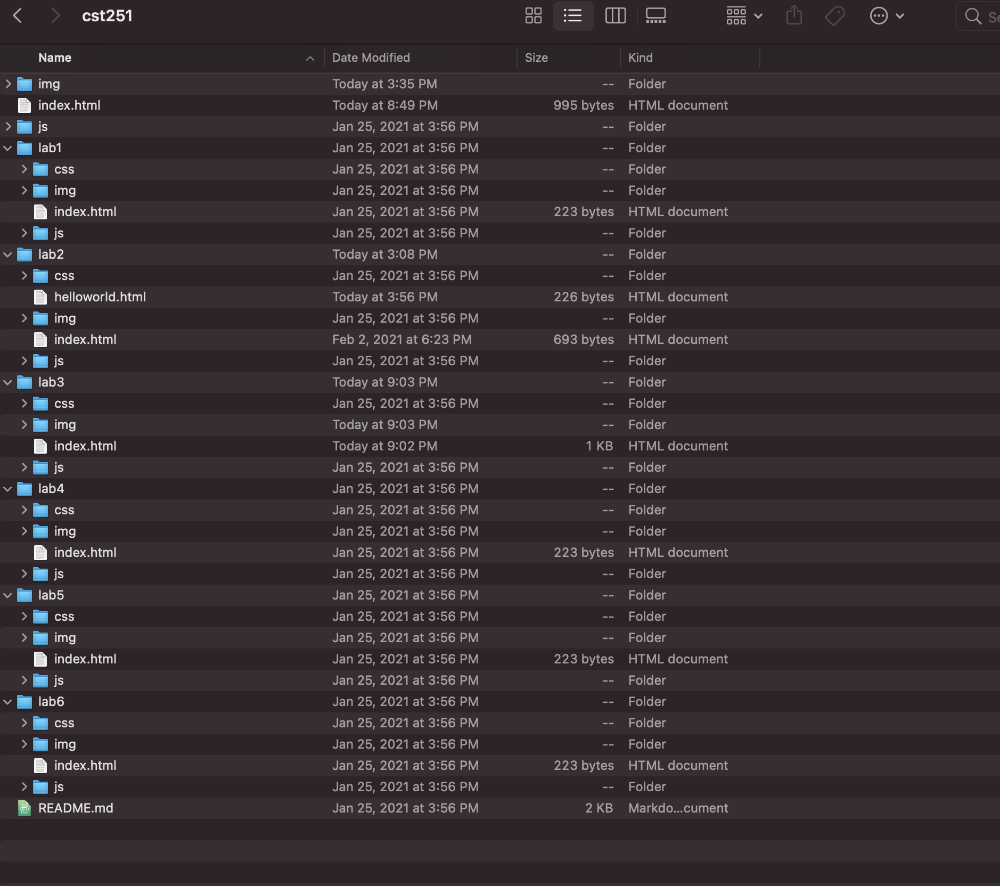

This lab's purpose was for us to practice making links to our other index.htmls so we can navigate to each seperate html document through the home page. We also understood how to create local files and add index.html.
My partner and I found most of this lab pretty straight forward and easy. However, when it came to adding pictures we had difficulties on how to resize and place where we wanted it go. My picture on my homescreen would end up in my text, even when I placed it after the body. I think coming up, this is something I would like to learn more about to upgrade my webpage.
The results of the lab seemed to be a success. Just look at this image of my file structure.
